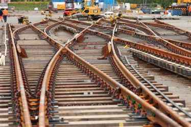
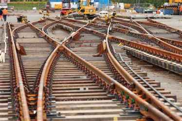

Overview
Syed Constructions specializes in executing large-scale railway projects, adhering to the highest safety and quality standards defined by Indian Railways and other governing bodies. Our scope includes formation, subgrade preparation, ballast laying, track alignment, and maintenance services.
Step-by-Step Railway Track Construction
1. Survey and Site Clearance
We begin with a detailed route survey using GPS and total station instruments. Once the alignment is finalized, the land is cleared of vegetation, debris, and obstructions, ensuring a clean slate for formation work.
2. Earthwork and Formation
This includes cutting, filling, and compaction using rollers and graders. Proper slopes, side drains, and embankments are constructed with quality soil to achieve the required formation level.
3. Subgrade Preparation
The subgrade is compacted and leveled to support the ballast and sleepers. Geotextile membranes or blanket layers are laid if required for additional strength and drainage.
4. Ballast Laying
Crushed stone ballast (typically 50mm size) is evenly distributed using mechanical or manual means. Vibratory compaction ensures a firm layer, essential for track stability and drainage.
5. Sleepers Placement
We place prestressed concrete sleepers at defined spacing. These sleepers are carefully aligned and leveled to meet track geometry and gauge specifications.
6. Rail Laying and Fastening
Long welded rails (LWR) or short rails are positioned and fastened using clips, pads, and bolts. Proper torque and tightening schedules are followed. Rail joints are either thermite welded or fish-plated based on design requirements.
7. Final Alignment and Tamping
The track is aligned using precision equipment. Tamping machines or manual labor are used to pack ballast beneath sleepers, ensuring a uniform load distribution.
8. Drainage and Side Works
We construct culverts, drains, and embankment protection walls. These are critical for maintaining the integrity of the railway structure over time.
9. Safety Signage and Finishing
We install boundary posts, kilometer stones, signaling cable trays, and necessary markers. The site is cleaned and handed over for inspection and commissioning.
Machinery and Team
We deploy excavators, dumpers, rollers, vibratory compactors, graders, ballast regulators, and tamping machines along with a trained workforce including civil engineers, supervisors, safety officers, and skilled laborers.
Past Projects
- New track laying – 12 km – Kadapa Division (2022)
- Ballast replacement – 6 km – Guntakal Division (2021)
- Track strengthening works with geo-fabric – 4 km – Anantapur Region (2020)
Gallery

 
